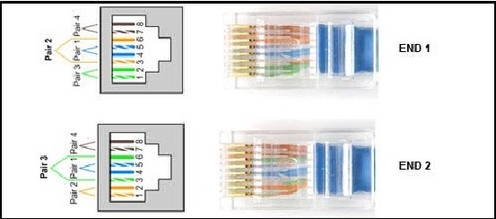
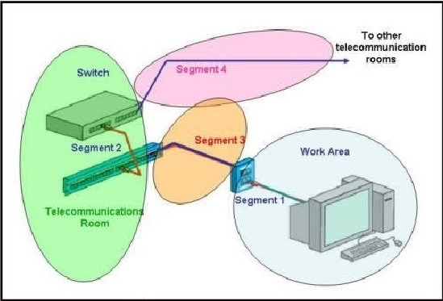
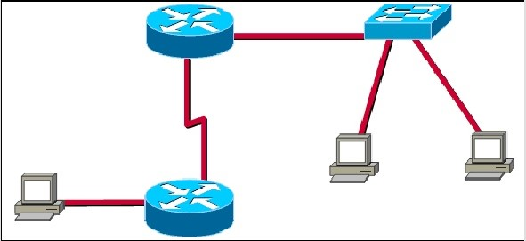
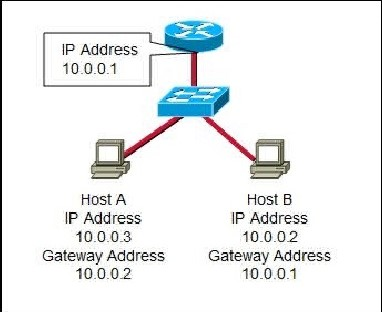
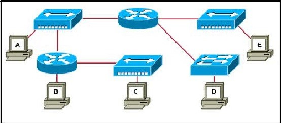
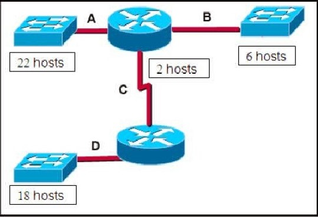
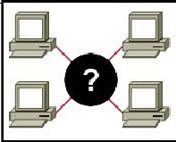
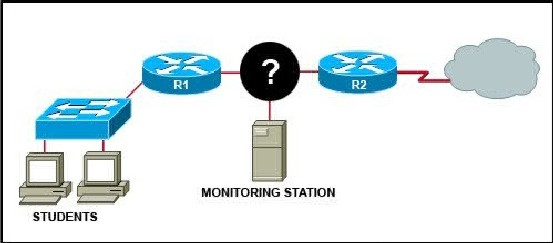
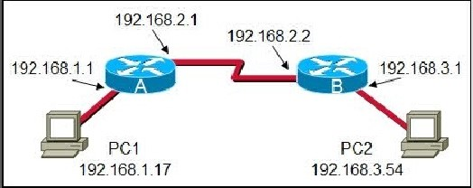
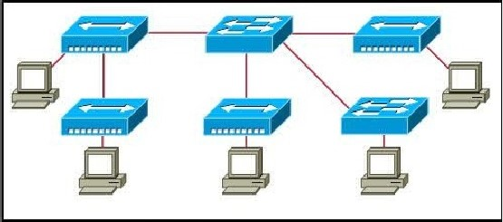

Chapter 10 – CCNA 1
01.Which three statements are true about the role of routers in the network? (Choose three.)
- They propagate broadcasts;
- They enlarge collision domains;
- They segment broadcast domains;
- They interconnect different network technologies;
- Each router interface requires a separate network or subnet;
- They maintain a common frame format between LAN and WAN interfaces.
02. Refer to the exhibit. A student working in the lab selects a cable that is wired as shown. Which connection types can successfully be made with this cable? (Choose two.)
{kind=link}
- connecting a PC to a router’s console port;
- connecting two routers together via their fast ethernet ports ;
- connecting two switches together at gigabit speeds ;
- connecting a PC to a switch at Gigabit Ethernet speeds ;
- connecting two devices with the same interface type at Fast Ethernet speed .
03. What makes fiber preferable to copper cabling for interconnecting buildings? (Choose three.)
- greater distances per cable run;
- lower installation cost;
- limited susceptibility to EMI/RFI;
- durable connections;
- greater bandwidth potential;
- easily terminated.
04. Which three types of connectors are commonly associated with Cisco’s V.35 serial cables? (Choose three.)
- RJ 11;
- DB 60;
- Winchester 15 pin;
- DB 9;
- smart serial;
- RJ 45.
05. Refer to the exhibit. Which three statements identify the type of cabling that would be used in the segments that are shown? (Choose three.)
{kind=link}
- Segment 1 uses backbone cabling;
- Segment 1 uses a patch cable;
- Segment 3 uses patch cabling;
- Segment 3 uses vertical cabling;
- Segment 3 uses horizontal cabling;
- Segment 4 uses vertical cabling.
06. Refer to the exhibit. How many subnets are required to support the network that is shown?
{kind=link}
- 2;
- 3;
- 4;
- 5.
07.  Refer to the exhibit. Based on the IP configuration shown, what would be the result of Host A and Host B attempting to communicate outside the network segment?
{kind=link}
- both host A and B would be successful;
- host A would be successful, host B would fail;
- host B would be successful, host A would fail;
- both Host A and B would fail.
08. What does the term “attenuation” mean in data communication?
- loss of signal strength as distance increases;
- time for a signal to reach its destination;
- leakage of signals from one cable pair to another;
- strengthening of a signal by a networking device;
09.  Refer to the exhibit. Which three statements are true about the exhibited topology? (Choose three.)
{kind=link}
- Hosts B and C are in the same subnet.
- Five broadcast domains are present.
- Host B is using a crossover cable to connect to the router.
- Four broadcast domains are present.
- Five networks are shown.
- Host B is using a rollover cable to connect to the router.
10. Which device is used to create or divide broadcast domains?
- hub;
- switch;
- bridge;
- router;
- repeater.
11. What are two common methods for setting a UTP Ethernet port to MDI or MDIX operation? (Choose two.)
- cable color code association;
- cable selection and configuration;
- use of cable testers to determine pinouts;
- the automatic detection and negotiating of MDI/MDIX operation of the port;
- the enabling of the mechanism to electrically swap the transmit and receive pairs.
12. What type of network cable is used between a terminal and a console port?
- cross-over;
- straight-through;
- rollover;
- patch cable.
13. Which option identifies the primary interface which would be used for initial configuration of a Cisco router?
- AUX interface;
- Ethernet interface;
- serial interface;
- console interface.
14.  Refer to the exhibit. A network technician has been allocated the 192.168.1.0/24 private IP address range for use in the network the shown in the exhibit. Which subnet mask would be used to meet the host requirements for segment A of this internetwork?
{kind=link}
- 255.255.255.128
- 255.255.255.192
- 255.255.255.224
- 255.255.255.240
- 255.255.255.248
16. A company is planning to subnet its network for a maximum of 27 hosts. Which subnet mask would provide the needed hosts and leave the fewest unused addresses in each subnet?
- 255.255.255.0
- 255.255.255.192
- 255.255.255.224
- 255.255.255.240
- 255.255.255.248
17.  Refer to the exhibit. A student is setting up a home network primarily used for extensive file transfers, streaming video, and gaming. Which network device is best suited to these types of activities in the topology shown?
{kind=link}
- wireless access point;
- router;
- hub;
- switch.
18. Refer to the exhibit. A network administrator has decided to use packet capture software to evaluate all traffic from the student su on the way to the Internet. To ensure that all packets are captured, what network device should be used to connect the monitorin station to the network between R1 and R2?
{kind=link}
- Hub;
- Router;
- Firewall appliance;
- Wireless access point.
19. Refer to the exhibit. What destination IP address will PC1 place in the header for a packet destined for PC2?
{kind=link}
- 192.168.1.1;
- 192.168.2.1;
- 192.168.2.2;
- 192.168.3.1;
- 192.168.3.54;
20. Refer to the exhibit. Assume that all devices are using default settings. How many subnets are required to address the topology the shown?
{kind=link}
- 1;
- 3;
- 4;
- 5;
- 7;
21. Which subnet mask would be assigned to the network address of 192.168.32.0 to provide 254 useable host addresses per subnetwork?
- 255.255.0.0;
- 255.255.255.0;
- 255.255.254.0;
- 255.255.248.0;
22. A network administrator is required to use media in the network that can run up to 100 meters in cable length without using repeat. The chosen media must be inexpensive and easily installed. The installation will be in a pre-existing building with limited cabling space.Which type of media would best meet these requirements?
- STP;
- UTP;
- Coaxial;
- Single-mode fiber;
- Multimode fiber;
23. How many host addresses may be assigned on each subnetwork when using the 130.68.0.0 network address with a subnet mask 255.255.248.0?
- 30;
- 256;
- 2046;
- 2048;
- 4094;
- 4096;